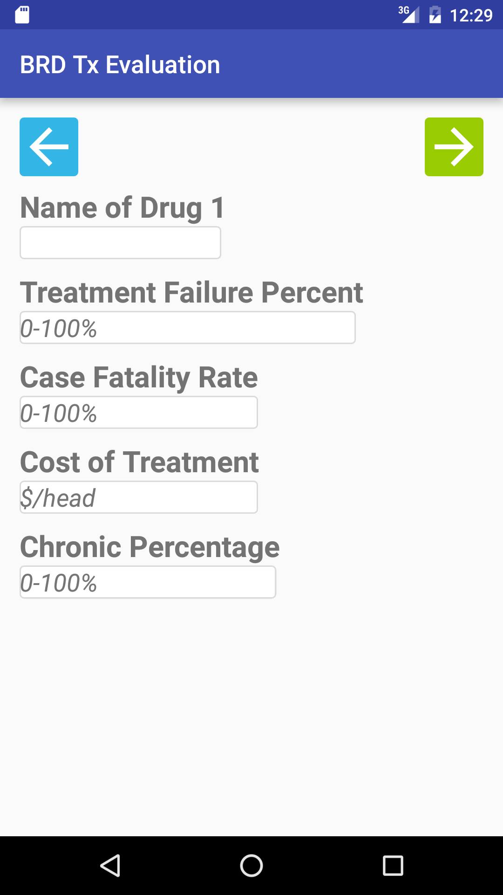
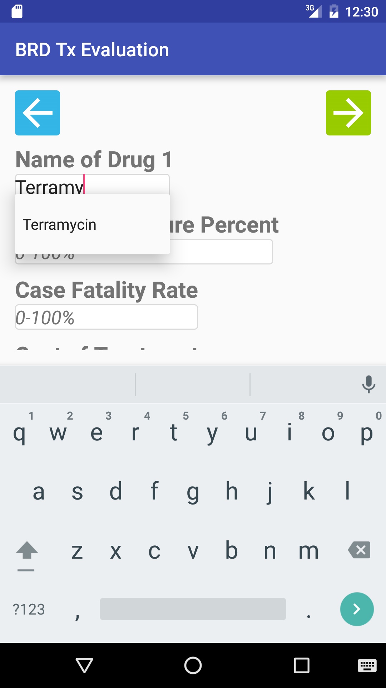
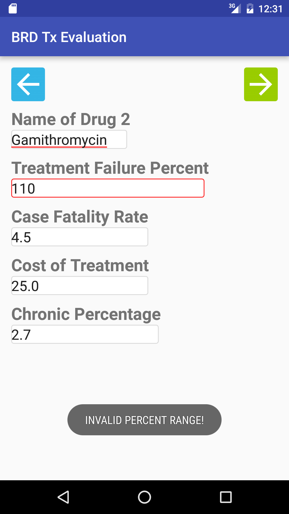
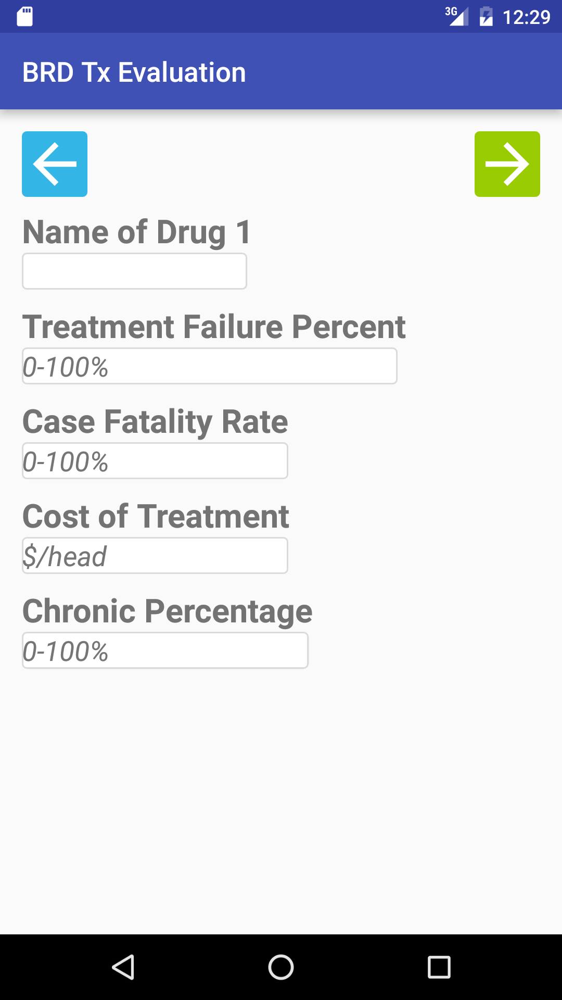
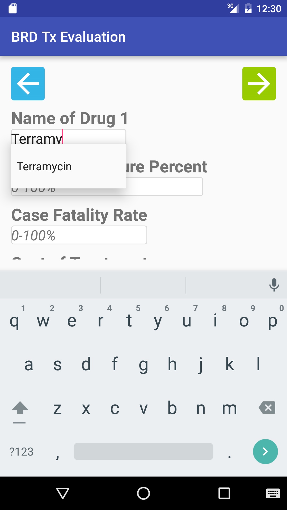
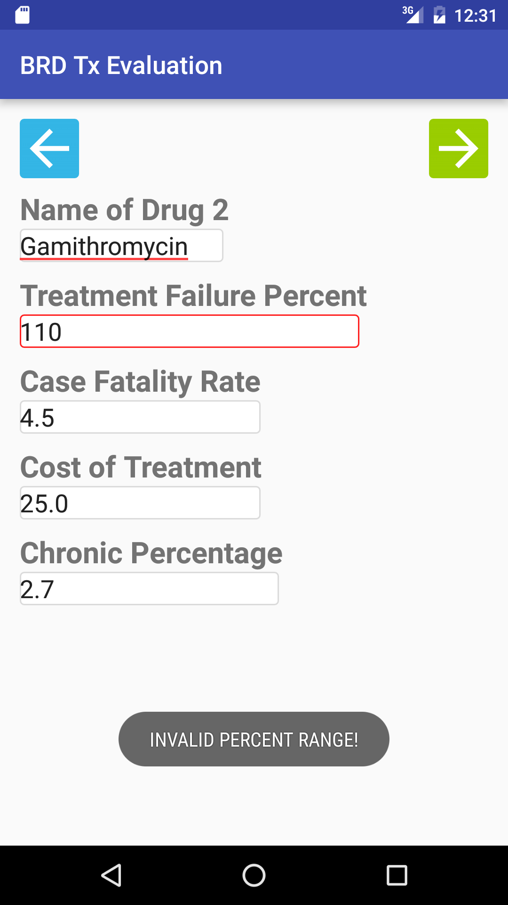
This calculator compares two antimicrobial treatment options based on user-entered values expressed in economic terms. The results of the comparison provides some information but does not provide a recommendation. Please consult your veterinarian to make the most appropriate decision for your operation.
The main screen provides a short description of the app's purpose. The user will then click on the button when ready to begin.
| 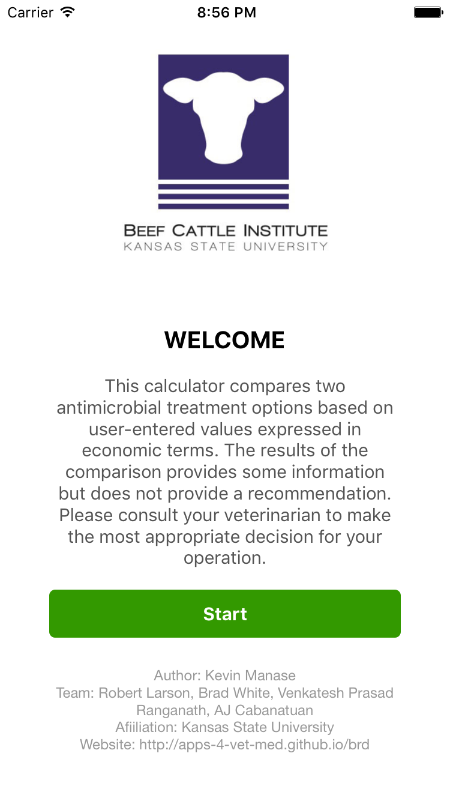 | 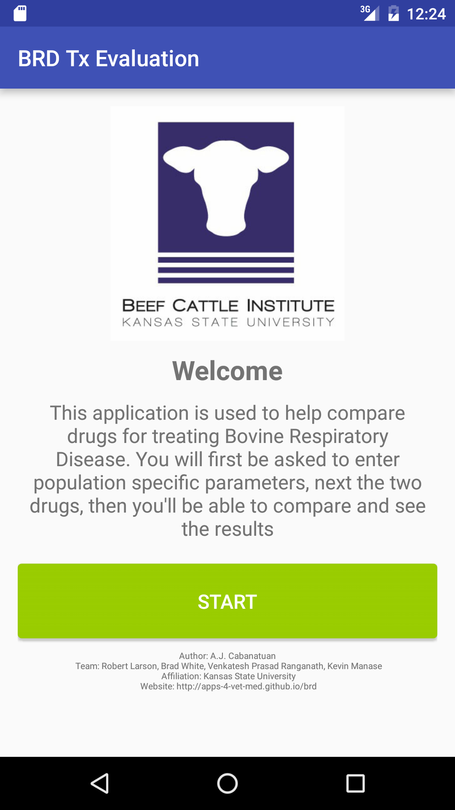 |
This screen asks the user for 6 different population parameters. Each individual field has its own constaint and all 6 have to meet the requirements to move forward. The data inputed may be saved in the device for later use.
| 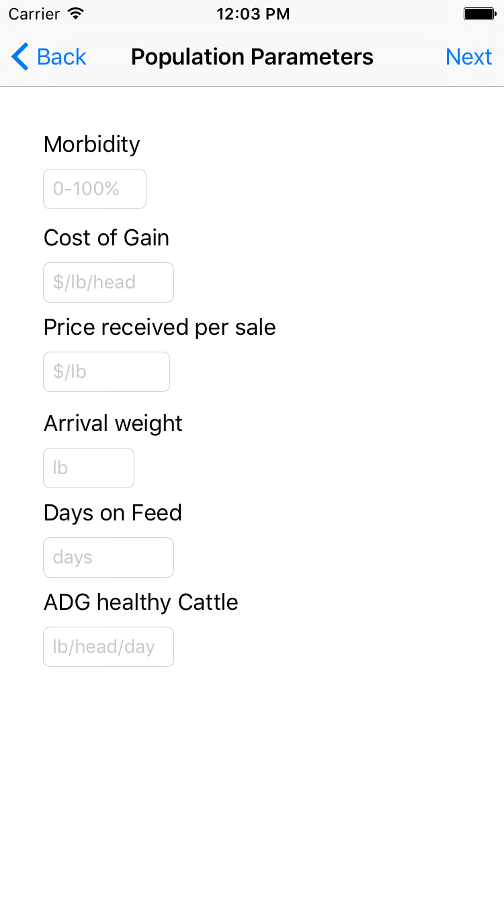 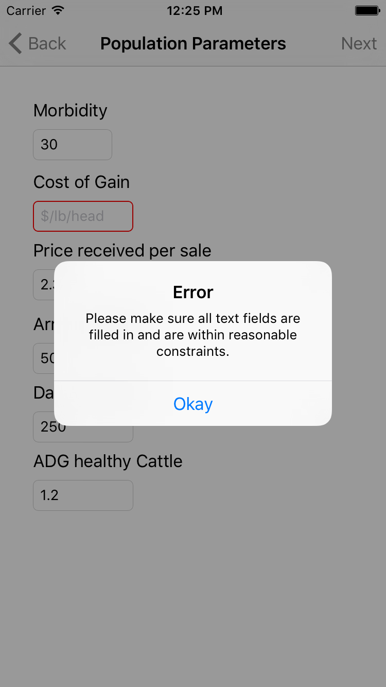 | 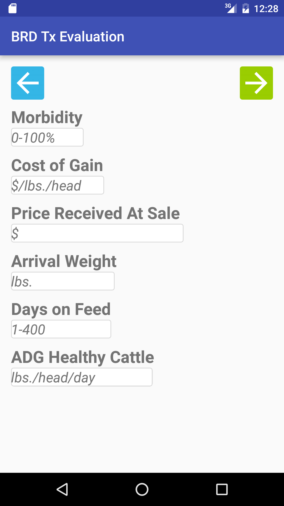 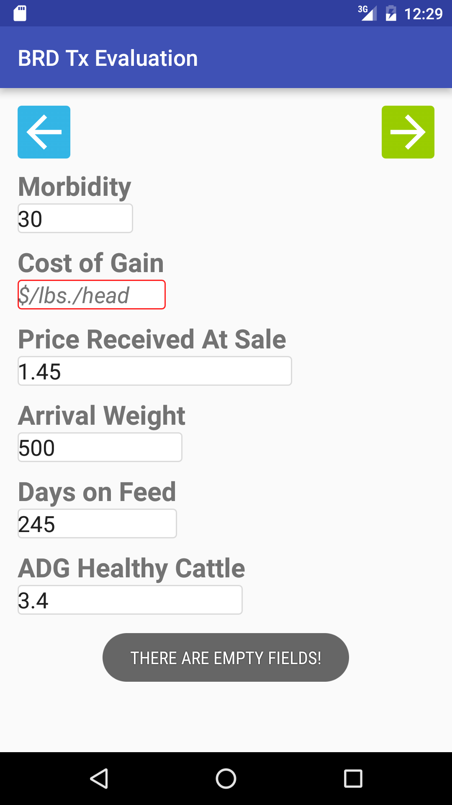 |
Since we are comparing 2 drugs, we have 2 screens: Drug 1 and Drug 2. Each drug has 5 different parameters. Most of the fields support autocompletion based on previously entered data. Again, each individual field has its own constraints and all 6 have to satisfy the constraints to move to the next screen. Input data will be saved on the device to enable autocompletion in future use of the app on the device.
|
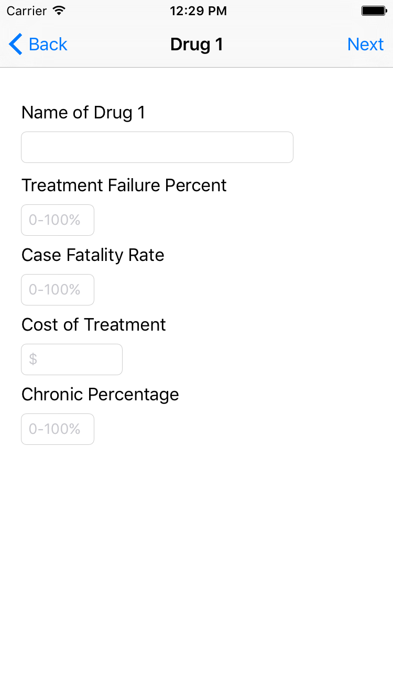
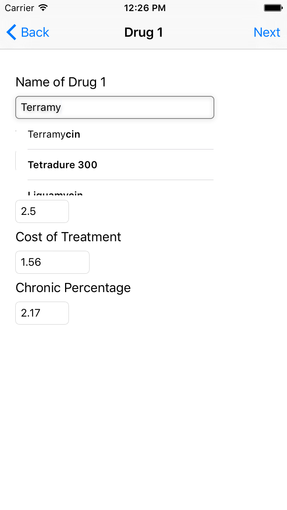
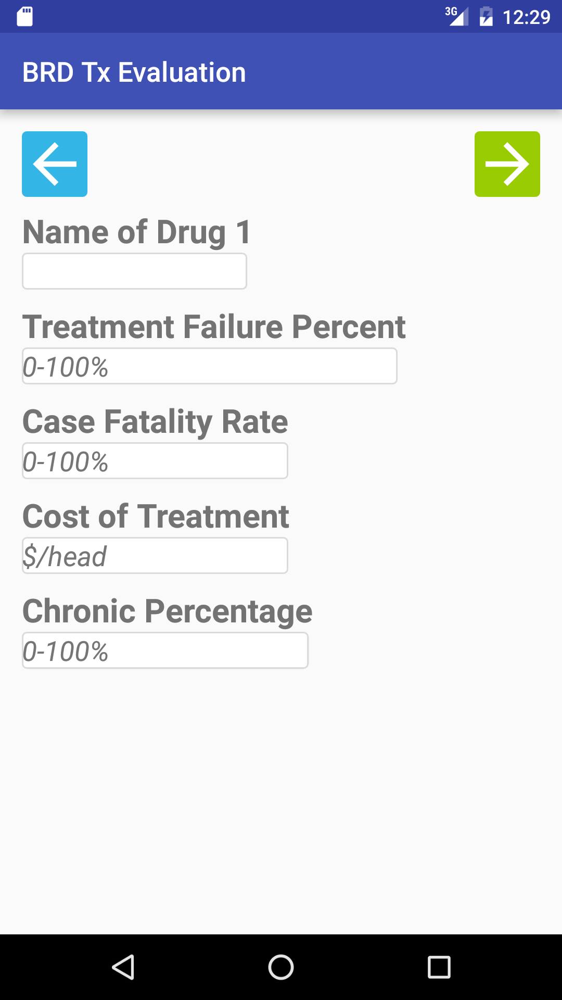
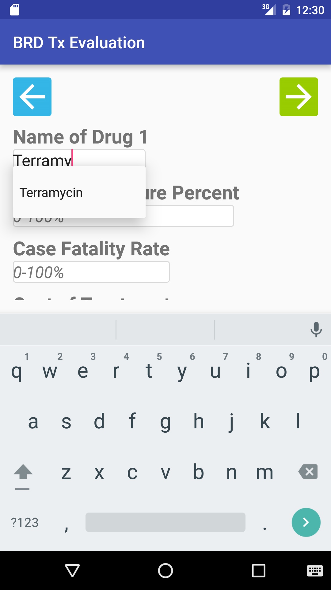
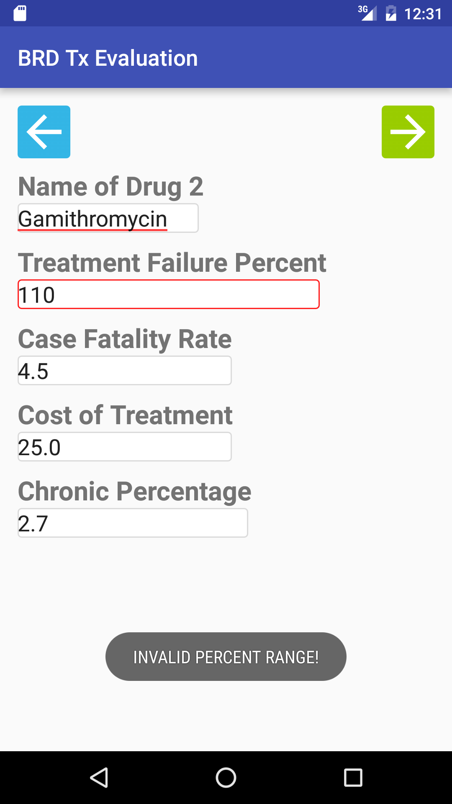
|
The last screen shows the results of the comparison. We have simplified it tremendously to only display the important calcuation, only displaying which drug is better by how much. The formulas were provided by the people of BCI.
| 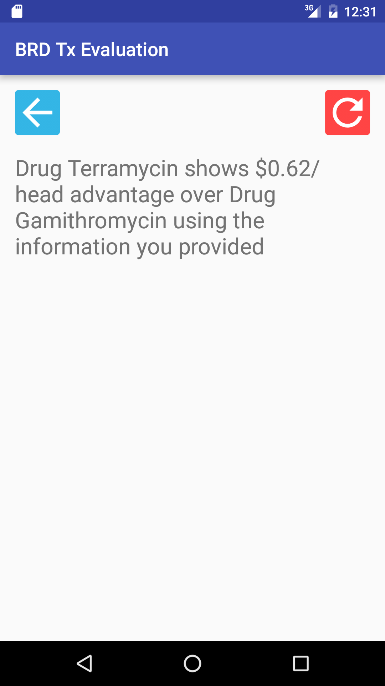 |
If you have any comments, feedback, or issues, please email them to us at mobile-apps-group@santoslab.org.